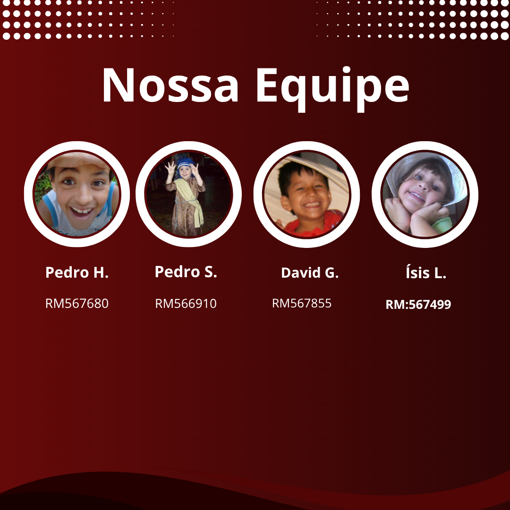

Nosso Time
A Vinheria Agnello é liderada por Giulio e sua filha Bianca. A operação conta com uma equipe enxuta entre administração, estoques e vendas — incluindo três vendedores especialistas que prestam atendimento consultivo.
Competências
- Conhecimento profundo sobre uvas, regiões e vinícolas
- Recomendações de harmonização por ocasião
- Atendimento próximo, acolhedor e didático